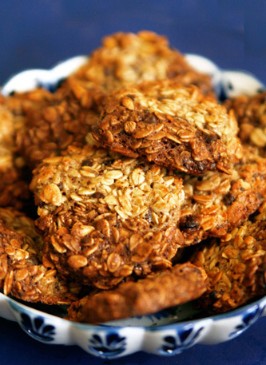

Kaerahelbeküpsised

Koostisosad
| Koostisosa |
Kogus |
| kaerahelbeid |
500 g |
| muna |
4 tk |
| suhkrut |
150 g |
| sulatatud võid |
150 g |
| vanilliekstrakti |
1 tl |
Valmistamine
- Vahusta munad suhkruga kohevaks heledaks vahuks.
- Maitsesta vanilliekstraktiga, lisa sulavõi, kaerahelbed ja rosinad.
- Sega hoolega, võimaluse korral lase umbes veerand tundi seista.
- Kata ahjuplaat küpsetuspaberiga.
- Tõsta supilusikaga tainaportsud ahjuplaadile ning küpseta 180kraadises ahjus umbes 12 minutit, kuni küpsised on helepruunid.